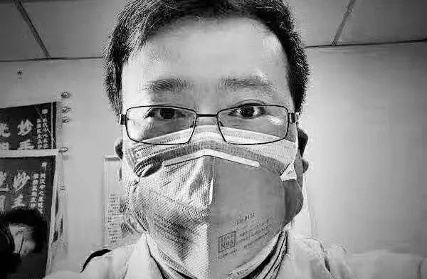

“我哭了，只求一张病床”
原文链接 备份链接 蔡婷说：“大家都荒谬到这个程度了。” 2月5日下午，湖北省人民医院拥挤的门诊部，蔡婷排了3个小时的队。这家医院昨天做了1500份新型冠状病毒的核酸检测，43岁的蔡婷和母亲的样本，也在其中。现在，蔡婷全部心思都在这上面， …
08.02.2020

本文字数：2576，阅读时长大约5分钟
导读：新型冠状病毒何时在他身上安家已难以追溯，但在2020年2月7日2时58分将其吞噬的日子已被铭记下来。
作者 | 第一财经 吕进玉 林志吟
2019年10月12日生日这一天，眼科医生李文亮在微博中留下“新的一岁希望能做个简单的人，看得清世间繁杂却不在心中留下痕迹，保持足够的平常心。”他用“炸鸡”犒赏了33岁的自己，并定位他在武汉市中心医院。
那是他最后一个生日。
2020年，一场由他和同伴“吹哨”警示的新型冠状病毒肺炎疫情，如今确诊人数已达到31232例，疑似26359例，治愈1572例（截至2020年2月7日16时）。而他却成为了死亡637例这些冰冷数字中的一员。
新型冠状病毒何时在他身上安家已难以追溯，但在2020年2月7日2时58分将其吞噬的日子已被铭记下来。
回顾李文亮的病情发展，2020年1月8日，李文亮接诊了一个无发热症状的病人，且未做防护。当天他开始出现咳嗽，第二天开始发热。
1月12日，李文亮查了呼吸道病毒，做了CT，因高度怀疑是新冠病毒肺炎而正式住院。
1月24日，李文亮病情加重，进入了他任职的武汉市中心医院呼吸内科重症监护室接受治疗，生活起居靠医生护士照料。
也就在前一天，武汉宣布”封城”，公共交通暂停运营，离汉通道关闭。
在李文亮治疗期间的28日，最高人民法院在官方公众号上贴出了一篇题《治理有关新型肺炎的谣言问题，这篇文章说清楚了》的文章，引发强烈关注，文中提及：“执法机关面对虚假信息，应充分考虑信息发布者、传播者在主观上的恶性程度，及其对事物的认知能力。只要信息基本属实，发布者、传播者主观上并无恶意，行为客观上并未造成严重的危害，我们对这样的‘虚假信息’理应保持宽容态度。”
这或许可以让躺在病床上的李文亮，获得一丝安慰。2019年12月30日，李文亮曾在朋友群披露疫情消息，2020年1月1日被警方传唤，1月3日收到训诫书。
1月30日，李文亮在接受媒体采访时透露，进入重症监护室后当时他住在一个四人间的隔离病房，不过这一病房里只住了两个人，他能够用手机和外界保持联系，护士每天会帮他擦脸、擦身体。也就是在这一天，医生告知他的核酸检测结果已经转阴了。这是他第二次核酸检测结果为阴性（即尚未确诊，仍为疑似）。
“但是这是咽拭子的结果，我觉得代表不了肺泡。肺功能恢复还需要一段时间，只是还有一些呼吸困难，一直需要高流量吸氧，还吃不下太多东西。“李文亮在当时接受媒体采访时形容。
从李文亮的微博可以看出，他是一个吃货，喜欢奶茶、炸鸡、火锅和日本料理。在厦门工作的三年中，经常定位在咖啡馆或是晒一些未经修饰的美食图片。
“我跟他（李文亮）一起去过福州眼科医院支援，他工作起来特别积极、细致。早期他的朋友圈都以吃为主线，吃个食堂都能把菜品描述成舌尖上的中国，非常热爱生活的一个人。女生缘也特别好，所以2014年2月份听说他要回武汉结婚时，我们还很舍不得他离开。”厦门大学附属厦门眼科中心眼表科主治医师罗顺荣在对第一财经记者回忆时说。
1月31日，李文亮仍抱着治愈希望。当天中午12点14分，他在微博中发文称，“经过治疗最近有进行一次检测，我的核酸显示为阴性了，但是目前仍然呼吸困难，无法活动。”同时，李文亮在微博中感谢了大家的支持，也澄清了其未被吊销执照，正在积极配合治疗，争取早日出院。
“最挂念我的家人，我的父母还在住院，我的爱人现在怀着孕。现在什么都不重要了，我希望疫情赶快控制住，大家都能好好的。”李文亮曾这样憧憬。
李文亮也还想，康复后，上一线。
然而两天后的2月1日，第三次核酸检测结果出来，他用微博发了最后的一条信息，宣告自己被正式确诊。“今天核酸检测结果阳性，尘埃落定，终于确诊了。”
在微博记录下这句时，李文亮文末还附带一个吐舌头淘气表情包，各种情感难以言状。
李文亮从1月12日因高度怀疑住院到2月1日才确诊，竟然用了20天之久。
一位第三方检测人士对第一财经记者表示，核酸检测出现假阴性，可能有多方面的原因：可能在早期，病毒含量比较低，使用的技术检测不出来；二是与采集样本有关，采样不当的话未取到含病毒的样本。
李文亮依旧在憧憬出院的那一天。2月4日，丁香园后台数据还显示，李文亮最后一次登陆他的丁香园账户。
病房外，疫情仍在肆虐。病房内，李文亮在与病情作殊死搏斗。2月5日，李文亮的病情开始恶化了。2月6日晚上7点，他被推进了急救室。22时左右，李文亮去世消息的瞬间在社交媒体上铺天盖地传开。
坏消息终究在之后的几个小时盖棺定论。2月7日凌晨3点48分，武汉中心医院官微发布消息：“我院眼科医生李文亮，在抗击新冠肺炎疫情工作中不幸感染，经全力抢救无效，于2020年2月7日凌晨2点58分去世。对此我们深表痛惜和哀悼。”
回顾李文亮从确诊到身故的轨迹，时间只有一周。为何这么年轻的李文亮，病情进展如此凶猛？
一般而言，像李文亮这样的年轻人病情较轻，60岁以上的年龄偏大的患者病情则会比较重，与这些患者所具有的糖尿病、高血压、肾病等基础性疾病有关，容易引发并发症，导致疾病重症化。
记者在采访中了解到，李文亮在疑似感染以前，一直在眼科，也并未去到一线。
上海一呼吸科主任医师在接受第一财经记者采访时认为，新冠肺炎总体而言病死率不是特别高，但并不意味着没有发展到重症的，现在可以看到重症和危重症还是占到一个相当的比例。死亡率在武汉会较高一些。尤其要注意的是，人群是普遍易感的，并非只有老年人和有基础疾病的死亡率才高。年轻人重症和危重症的只是相对几率更小，但是仍然会有这种风险。
李文亮逝世的消息，让身边的亲朋好友也措手不及。“愿你的牺牲能够为这世间点亮哪怕是文弱的亮光，正如你的名字一样！”曾与李文亮共事过的厦门大学附属厦门眼科中心眼表科主治医师刘昭升泣不成声。
受肺炎感染的还有李文亮的父母。2月6日晚上，刚治愈出院的李文亮父母匆匆赶到医院。“20多天以前他的病情基本是稳定的，也能下床，还能吃饭，突然就这两天恶化就这样了，他们医院驱车把我们接过来了，然后给他尸体送殡仪馆去了，完了回来在医院处理我儿子的遗物，没有见到最后一面，就在医院抢救治疗我们都没有看见。”李文亮母亲悲郁。
第一财经记者获悉，李文亮与妻子付雪洁有一五岁的儿子，且付雪洁正妊娠六个月。付雪洁在李文亮染病后返乡枣阳老家自我隔离，目前并未感染。
李文亮离世的第一天，国家监察委员会决定对李文亮医生的有关问题作全面调查；武汉市人社局对李文亮医生认定工伤：获得一次性工亡补助金78.502万元和丧葬补助金3.6834万元。
而在7日晚上9点，有武汉市民自发在李文亮医生离世，也是他曾吹响生命之哨的地方，用同样的方式祭奠了这位勇敢发出声音，签下训诫书，又继续冲上治疗一线的平凡英雄。
【推荐阅读】


原文链接 备份链接 蔡婷说：“大家都荒谬到这个程度了。” 2月5日下午，湖北省人民医院拥挤的门诊部，蔡婷排了3个小时的队。这家医院昨天做了1500份新型冠状病毒的核酸检测，43岁的蔡婷和母亲的样本，也在其中。现在，蔡婷全部心思都在这上面， …
原文链接 备份链接 _ 新冠肺炎核酸检测阳性比率低，与病情发展阶段、采集流程是否规范、试剂盒的质量相关。为减少可能的“漏诊”，专家建议对不同厂商的试剂盒进行系统对比 _ 文 |《财经》记者 孙爱民 言清 王小 编辑 | 王小 近日在湖北 …
原文链接 备份链接 【财新网】（记者 黄蕙昭 综合）武汉市中心医院门前放满花束。7日凌晨3点48分，武汉中心医院官微发布李文亮医生抢救无效过世的消息。当日，手持花束的市民自发前往武汉中心医院，悼念在工作岗位被感染的李文亮医生。他曾因“发 …
原文链接 备份链接 根据丁香医生实时数据，截至 2020 年 2 月 7 日 18 时，全国累计确诊病例 31253 例，疑似病例 26359 例，新增确诊病例 3193 例，新增疑似病例 4833 例。其中，重症病例 4821 例，死亡 …
原文链接 备份链接 世上没有从天而降的英雄，只有挺身而出的凡人。 李文亮医生走了。 2020年2月7日凌晨3点48分，武汉市中心医院微博发布消息：我院眼科医生李文亮，在抗击新型冠状病毒感染的肺炎疫情工作中不幸感染，经全力抢救无效， …